ראשי שרשרת המזון
גללו למטה כדי לצלול במעמקי הזמן ולגלות מי עמד בראש שרשרת המזון בכל עידן/ תקופה פרה היסטורית, כיצד הם הגיעו לזה, ומה הביא לקצם
לווייתן קטלן (אורקה)
על היצור: השליט הבלתי מעורער של האוקיינוסים כיום. האורקות אינן לווייתנים אמיתיים אלא הדולפינים הגדולים ביותר בעולם. הן מציגות אסטרטגיות ציד קבוצתיות מתוחכמות, מעבירות ידע בין דורות, ומסוגלות להפוך סירות או ליצור גלים כדי להפיל כלבי ים מקרחונים.
סטטוס: יצור זה לא נכחד וחי כיום.

סמילודון (Smilodon)
על היצור: הידוע כ"נמר בעל שיני החרב". הוא היה כבד ובנוי בצורה חסונה בהרבה מאריות מודרניים, מה שאיפשר לו להכניע חיות ענק כמו ממוטות צעירות וביזונים. ניביו העצומים, שהגיעו לאורך של 28 ס"מ, היו שבירים יחסית, ולכן הוא השתמש בהם רק לאחר שריתק את הטרף לקרקע כדי לחתוך את עורקי צווארו.
סיבת ההכחדה: נכחד בסוף עידן הקרח בעקבות שילוב של שינויי אקלים קיצוניים ששינו את הצמחייה, והיעלמותם של יונקי הענק (הטרף העיקרי שלו). בנוסף, הגעתם של בני האדם הראשונים ליבשת אמריקה יצרה תחרות קשה על מזון.
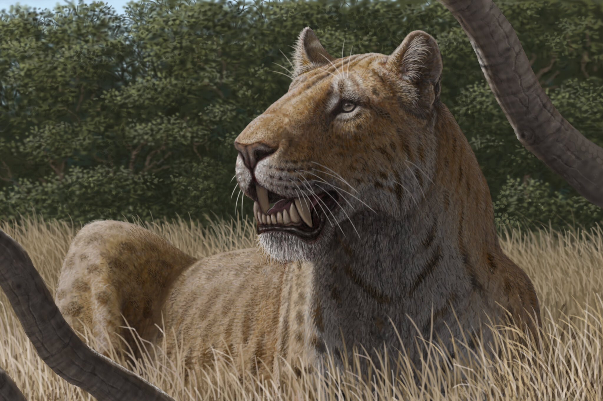
מגלודון (Megalodon)
על היצור: הכריש המפלצתי הגדול ביותר ששחה אי פעם בימים, באורך מוערך של 15 עד 18 מטרים (פי 3 מכריש לבן מודרני). שיניו היו בגודל של כף יד אנושית, ועם לסתות עצומות הוא ניזון בעיקר מלווייתנים קדומים ויונקים ימיים גדולים, תוך שהוא מרסק את עצמותיהם בנשיכה אחת.
סיבת ההכחדה: התקררות גלובלית של האוקיינוסים שינתה את מסלולי הנדידה של הלווייתנים לעבר קטבים קרים מדי עבור המגלודון. במקביל, הופעתם של טורפים חכמים ומהירים יותר שצדו בלהקות, כמו האורקות הקדומות, יצרה תחרות שהוא לא יכול היה לעמוד בה.
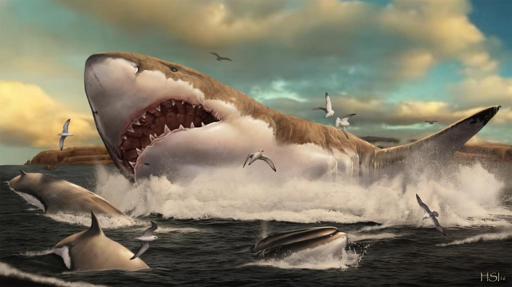
בזילוזאורוס (Basilosaurus)
על היצור: לווייתן טורף קדום מתחילת עידן היונקים. הוא היה בעל גוף ייחודי, ארוך ונחשי שהגיע לאורך של כ-18 מטרים, עם לסתות חזקות להחריד המלאות בשיניים משוננות. הוא תפקד כטורף-העל של האוקיינוסים בתקופתו וניזון מדגים, כרישים ויונקים ימיים קטנים יותר.
סיבת ההכחדה: נכחד בעקבות אירוע התקררות גלובלי בסוף תקופת האאוקן, אשר שינה את זרמי האוקיינוסים, מוטט את שרשראות המזון הימיות המקומיות וגרם להיעלמות אזורי המחיה החמימים והרדודים שבהם צד.
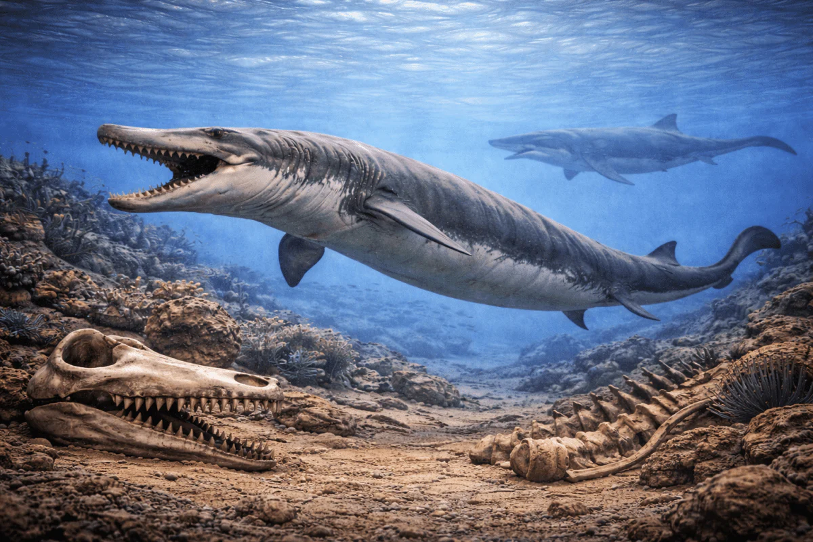
טיטאנובואה (Titanoboa)
על היצור: הנחש הגדול ביותר שחי אי פעם על כדור הארץ, אשר הגיע לאורך של כ-13 מטרים ושקל מעל טונה. לאחר היעלמות הדינוזאורים, נחש חנק מפלצתי זה מלך בג'ונגלים הטרופיים הלחים של דרום אמריקה והיה מסוגל להכניע ולבלוע בקלות תניני ענק ודגי ריאה מסיביים.
סיבת ההכחדה: נכחד כאשר האקלים הגלובלי החל להתקרר בהדרגה. בתור זוחל בעל דם קר, הטיטאנובואה היה תלוי לחלוטין בטמפרטורות סביבה גבוהות מאוד כדי לתחזק את המטבוליזם של גופו העצום, ועם ירידת המעלות הוא לא יכול היה לשרוד.
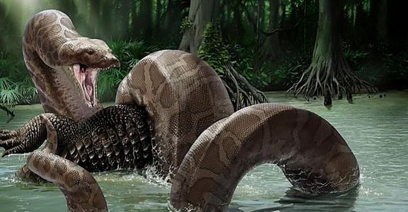
טירנוזאורוס רקס (T-Rex)
על היצור: מלך הדינוזאורים הטורפים ביבשה. ה-T-Rex הגיע לאורך של 12 מטרים ושקל כ-8 טונות. היו לו רגליים אחוריות חזקות, חוש ריח מפותח בצורה יוצאת דופן, וראייה תלת-ממדית מצוינת. שיניו המשוננות ועוצמת הנשיכה שלו היו מסוגלות לחדור שריון עצם של דינוזאורים צמחוניים.
סיבת ההכחדה: נכחד באירוע ההכחדה ההמוני (K-Pg), כאשר אסטרואיד ענק פגע בכדור הארץ. הפגיעה יצרה ענני אבק וגופרית שחסמו את השמש לשנים, עצרו את הפוטוסינתזה, מוטטו את הצמחייה והובילו לקריסת כל שרשרת המזון.
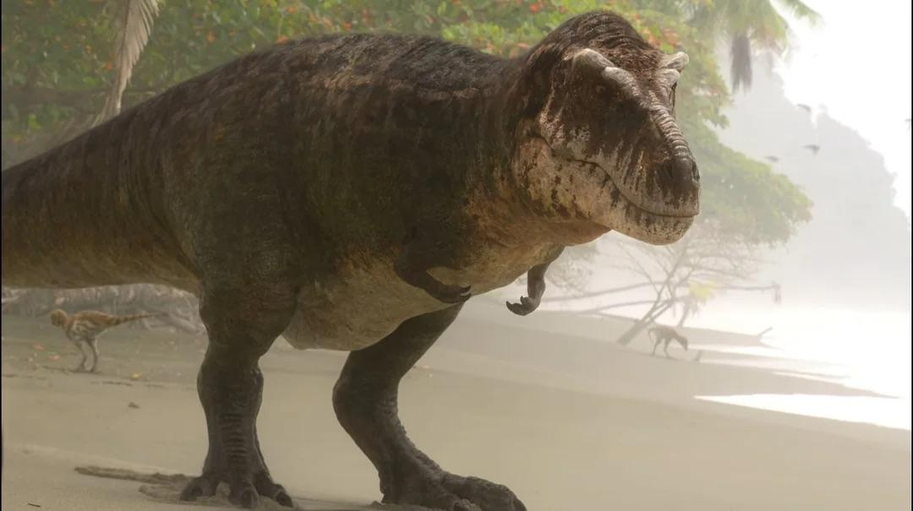
מוזאזאורוס (Mosasaurus)
על היצור: בזמן שהטירקס שלט ביבשה, זוחל הים האימתני הזה מלך באוקיינוסים. הוא הגיע לאורך של כ-17 מטרים, החזיק בגוף הידרודינמי עוצמתי עם ארבעה סנפירים ולסתות ארוכות ומפחידות. הוא היה צייד אכזרי שטרף דגים, צבים, כרישים קדומים ואפילו בני מינו.
סיבת ההכחדה: נכחד יחד עם הטירקס ושאר הדינוזאורים באותו אירוע הכחדה המוני בעקבות פגיעת האסטרואיד, שגרם לקריסה מוחלטת של המערכת האקולוגית הימית ושרשרת המזון באוקיינוסים.
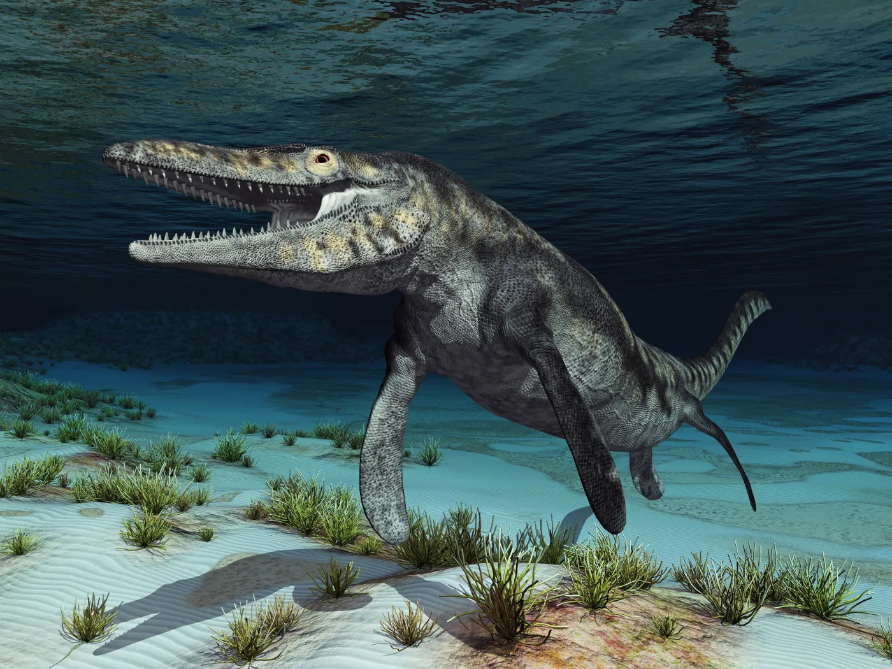
פליוזאורוס (Pliosaurus)
על היצור: זוחל ימי מסיבי הידוע בכינוי "Predator X". יצור זה שילב גוף הידרודינמי עם ארבעה סנפירי ענק שאיפשרו לו לזנק במהירות אדירה מתוך המעמקים. לסתותיו הארוכות היו מלאות בשיניים חדות והחזיקו בעוצמת נשיכה שעל פי ההערכות הייתה חזקה פי ארבעה מזו של הטי-רקס.
סיבת ההכחדה: נכחד בעקבות שינויים משמעותיים במפלס המים וטמפרטורת האוקיינוסים בסוף תור היורה, דבר שגרם להיעלמותם של זוחלים ימיים קטנים יותר מהם ניזון, והעביר את השליטה הימית לדור חדש של כרישים וזוחלים אחרים.
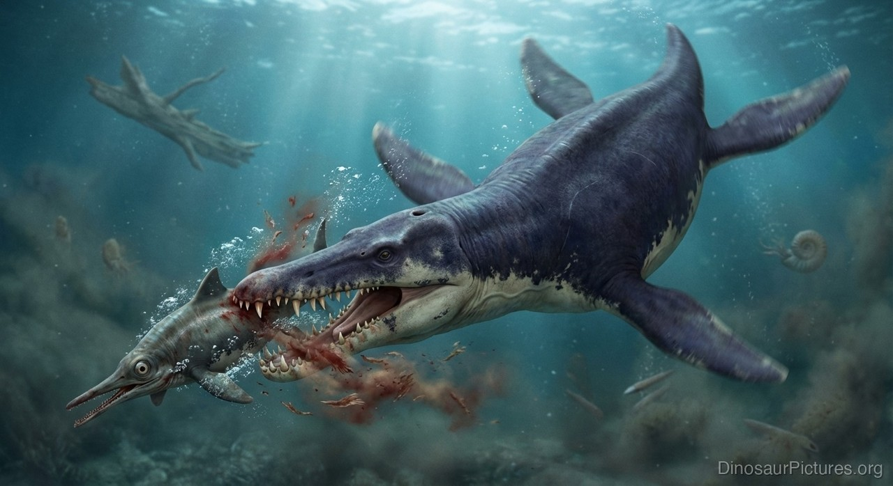
מטרודון (Dimetrodon)
על היצור: למרות שהוא נראה כמו דינוזאור, הדימטרודון קרוב יותר מבחינה אבולוציונית ליונקים! הוא היה טורף היבשה הדומיננטי ביותר בתקופתו. המאפיין המפורסם ביותר שלו הוא המפרש הענק שנוצר מעמוד השדרה שלו, אשר עזר לו לווסת את חום גופו במהירות בבקרים, וכך לצוד את טרפו בעודו קפוא ואיטי.
סיבת ההכחדה: נכחד באירוע ההכחדה הגדול ביותר בהיסטוריית כדור הארץ – "ההכחדה מהתקופה הפרמית" (The Great Dying). התפרצויות געשיות אפוקליפטיות בסיביר שחררו כמויות אדירות של גזי חממה, העלו את טמפרטורת הפלנטה באופן קיצוני והרגו כ-95% מכלל היצורים החיים.
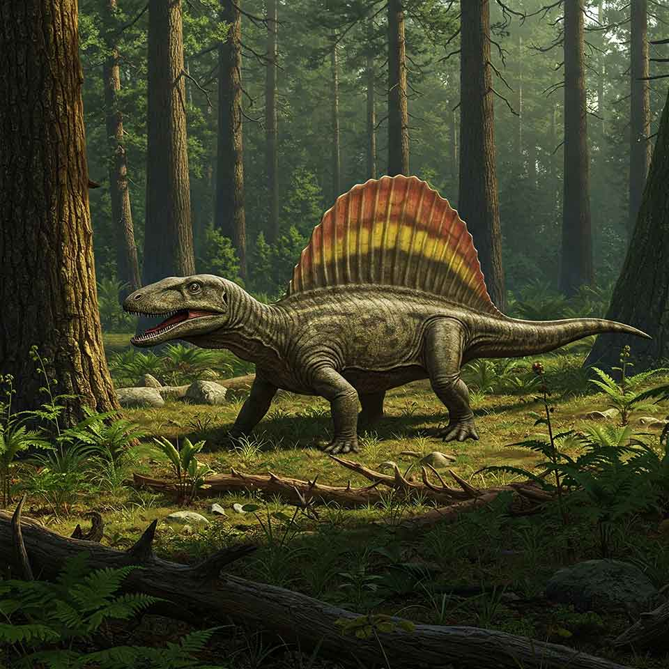
דנקליאוסטיוס (Dunkleosteus)
על היצור: דג משוריין אימתני באורך של כ-6 מטרים ששלט בימים. במקום שיניים רגילות, היו לו לוחות עצם חדים כתער שהיוו חלק מהגולגולת המשוריינת שלו. המבנה הייחודי של הלסת איפשר לו לפתוח את פיו במהירות של שבריר שנייה, ובכך ליצור ואקום חזק ששאב את הטרף פנימה ופיצח את שריונו.
סיבת ההכחדה: נכחד במהלך אירוע ההכחדה של תור הדבון, שנבע ככל הנראה מירידה דרסטית ברמות החמצן באוקיינוסים ושינויי אקלים מהירים. היצורים המשוריינים הגדולים והכבדים לא הצליחו לשרוד בסביבה דלת חמצן זו.
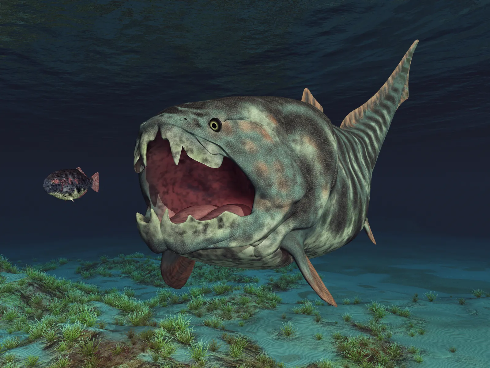
אנומלוקאריס (Anomalocaris)
על היצור: טורף העל האמיתי הראשון בהיסטוריה של כדור הארץ. בעולם שבו רוב היצורים היו קטנים, רכים ואיטיים, האנומלוקאריס היה ענק (כחצי מטר אורך), החזיק בעיניים מורכבות וחדות, שחה באמצעות סנפירים צדדיים, ולכד את הטרף שלו באמצעות שתי זרועות קוצניות ומאיימות בקדמת פיו.
סיבת ההכחדה: נכחד בעקבות שינויים בהרכב המים באוקיינוסים בסוף תור הקמבריון, ותחרות קשה מול יצורים חדשים שהתפתחו, כמו פרוקי-רגליים משוריינים יותר וצדפות מוקדמות שהגנו על עצמן בהצלחה מפניו.
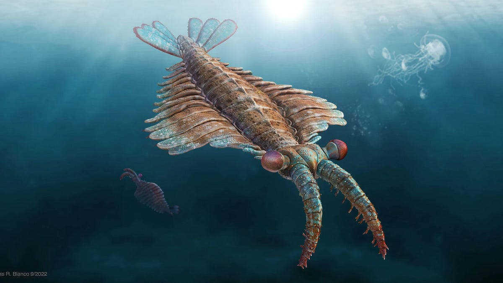
קימברלה (Kimberella)
על היצור: יצור קדום דמוי רכיכה שהיה פריצת דרך אבולוציונית. בתקופה שבה רוב היצורים היו מקובעים לקרקעית הים ללא תנועה, הקימברלה פיתח יכולת תנועה אקטיבית. היה לו איבר דמוי חדק איתו גירד ופירק מרבדי חיידקים ואצות על פני הקרקע, מה שהפך אותו ל"צרכן הדומיננטי" הראשון בעולם.
סיבת ההכחדה: נכחד במסגרת "פיצוץ הקמבריון" – הגעתם של יצורים מורכבים, מהירים ומשוריינים בהרבה (כמו האנומלוקאריס) שהחלו לצוד באופן אקטיבי ודחקו את יצורי האדיאקר הרכים מהעולם.
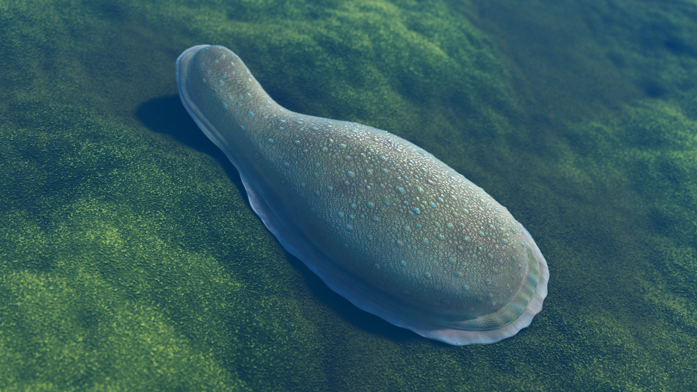